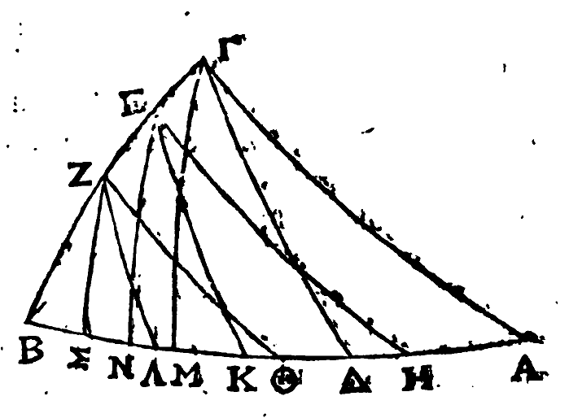
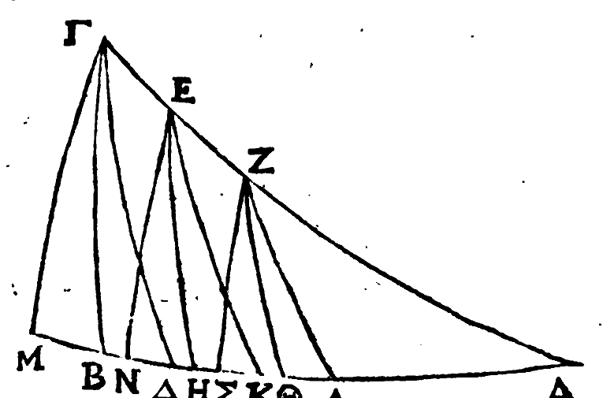

Proposition III.14 — Theorem: General Oblique-Ascension Comparisons¶
Menelai Alexandrini Sphaericorum Lib. III Prop. XIV. Theor. (Halley 1758, pp. 104–107)
Enunciation (Halley 1758, pp. 104–105)
If the sides of a spherical triangle be unequal, and the greater of them do not exceed a quadrant, and from its vertex an arc be drawn to the base in any manner, provided it be not less than the less side of the triangle; and on the less side arcs be taken, through whose endpoints arcs be drawn to the base containing with it angles equal to the angle which the greater side of the triangle contains with the same; and through the same endpoints other arcs be drawn containing with the base angles equal to the angle which the arc first drawn contains with it: then the same things will come to pass as were stated in the preceding propositions. And universally the ratio of the arcs intercepted by those which contain equal angles with the
f. 0121 · p. 105

base and the greater side, wherever they be taken, shall be greater than the ratio of the arcs intercepted by those other drawn arcs—provided indeed that in all these ratios the antecedents be those arcs which lie adjacent to the greater side, and the consequents those which are more remote from the same.
Let \(\triangle \mathrm{AB\Gamma}\) be a spherical triangle, whose side \(\widehat{\mathrm{A\Gamma}}\) is greater than side \(\widehat{\mathrm{B\Gamma}}\), yet not greater than a quadrant of a circle, and from vertex \(\mathrm{\Gamma}\) let any arc \(\mathrm{\Gamma\Delta}\) be drawn to base \(\mathrm{AB}\), which is not less than \(\widehat{\mathrm{B\Gamma}}\); and on \(\mathrm{B\Gamma}\) let two arcs \(\widehat{\mathrm{\Gamma E}}, \widehat{\mathrm{EZ}}\) be taken, and through their extremities let arcs \(\mathrm{EH}, \mathrm{Z\Theta}\) be drawn to the base containing with it angles equal to angle \(\angle \mathrm{A}\); let there also be drawn other arcs \(\mathrm{EK}, \mathrm{Z\Lambda}\) making with the same base angles equal to the angle at \(\mathrm{\Delta}\): I say that the ratio of arc \(\widehat{\mathrm{AH}}\) to arc \(\widehat{\mathrm{H\Theta}}\) is greater than the ratio of arc \(\widehat{\mathrm{\Delta K}}\) to \(\widehat{\mathrm{K\Lambda}}\).
For if angle \(\angle \mathrm{AB\Gamma}\) be right, (by Book III Prop. 4) the sine of arc \(\widehat{\mathrm{AB}}\) will be to the sine of arc \(\widehat{\mathrm{BH}}\) as the sine of arc \(\widehat{\mathrm{\Delta B}}\) is to the sine of arc \(\widehat{\mathrm{BK}}\); and likewise the sine of arc \(\widehat{\mathrm{BH}}\) is to the sine of arc \(\widehat{\mathrm{B\Theta}}\) as the sine of arc \(\widehat{\mathrm{BK}}\) is to the sine of arc \(\widehat{\mathrm{B\Lambda}}\): whence also from the preceding all those things that were stated are manifest.
But if the angle at \(\mathrm{B}\) be not right, let perpendicular arcs \(\mathrm{\Gamma M}, \mathrm{EN}, \mathrm{Z\Sigma}\) be drawn to the base: since \(\widehat{\mathrm{\Gamma\Delta}}\) is not less than \(\widehat{\mathrm{\Gamma B}}\), \(\widehat{\mathrm{\Delta M}}\) will not be less than \(\widehat{\mathrm{MB}}\); and by the reasoning employed above, it will be proved that the sine of arc \(\widehat{\mathrm{AM}}\) is to the sine of arc \(\widehat{\mathrm{MB}}\) as the sine of arc \(\widehat{\mathrm{HN}}\) is to the sine of arc \(\widehat{\mathrm{NB}}\), and thus the sine of arc \(\widehat{\mathrm{\Theta\Sigma}}\) to the sine of \(\widehat{\mathrm{\Sigma B}}\); and likewise the sine of arc \(\widehat{\mathrm{\Delta M}}\) will be to the sine of arc \(\widehat{\mathrm{MB}}\) as the sine of arc \(\widehat{\mathrm{KN}}\) to the sine of arc \(\widehat{\mathrm{NB}}\), and as the sine of arc \(\widehat{\mathrm{\Lambda\Sigma}}\) to the sine of arc \(\widehat{\mathrm{\Sigma B}}\). But arc \(\widehat{\mathrm{AM}}\) is greater than \(\widehat{\mathrm{BM}}\), and arc \(\widehat{\mathrm{\Delta M}}\) is not less than \(\widehat{\mathrm{BM}}\), and neither arc \(\widehat{\mathrm{AM}}\) nor \(\widehat{\mathrm{A\Gamma}}\) is greater than a quadrant of a circle: therefore the ratio of arc \(\widehat{\mathrm{AH}}\) (that is, the difference of arcs \(\widehat{\mathrm{AB}}, \widehat{\mathrm{BH}}\)) to \(\widehat{\mathrm{H\Theta}}\) (that is, the difference of arcs \(\widehat{\mathrm{BH}}, \widehat{\mathrm{B\Theta}}\)) will be greater than the ratio which \(\widehat{\mathrm{\Delta K}}\) (the difference of arcs \(\widehat{\mathrm{\Delta B}}, \widehat{\mathrm{BK}}\)) has to arc \(\widehat{\mathrm{K\Lambda}}\) (the difference of arcs \(\widehat{\mathrm{KB}}, \widehat{\mathrm{B\Lambda}}\)). And likewise it will follow
f. 0122 · p. 106

that arc \(\widehat{\mathrm{A\Delta}}\) has a greater ratio to arc \(\widehat{\mathrm{\Delta B}}\) than arc \(\widehat{\mathrm{HK}}\) has to \(\widehat{\mathrm{KB}}\), and that this ratio is greater than that which \(\widehat{\mathrm{\Theta\Lambda}}\) has to \(\widehat{\mathrm{\Lambda B}}\).
For the sine of arc \(\widehat{\mathrm{AM}}\) is to the sine of arc \(\widehat{\mathrm{HN}}\) as the sine of arc \(\widehat{\mathrm{M\Delta}}\) is to the sine of \(\widehat{\mathrm{KN}}\), and the sine of arc \(\widehat{\mathrm{HN}}\) to the sine of \(\widehat{\mathrm{\Theta\Sigma}}\) as the sine of \(\widehat{\mathrm{KN}}\) to the sine of \(\widehat{\mathrm{\Lambda\Sigma}}\), because they are among themselves as the sine of arc \(\widehat{\mathrm{MB}}\) is to the sine of \(\widehat{\mathrm{BN}}\), and as the sine of \(\widehat{\mathrm{BN}}\) is to the sine of \(\widehat{\mathrm{B\Sigma}}\); and accordingly, by the reasoning of the preceding Scholion, the difference of arcs \(\widehat{\mathrm{AM}}, \widehat{\mathrm{HN}}\) will be to the difference of arcs \(\widehat{\mathrm{HN}}, \widehat{\mathrm{\Theta\Sigma}}\) in a greater ratio than the difference of arcs \(\widehat{\mathrm{\Delta M}}, \widehat{\mathrm{KN}}\) is to the difference of arcs \(\widehat{\mathrm{KN}}, \widehat{\mathrm{\Lambda\Sigma}}\); that is, the difference of arcs \(\widehat{\mathrm{AH}}, \widehat{\mathrm{MN}}\) will be to the difference of arcs \(\widehat{\mathrm{H\Theta}}, \widehat{\mathrm{N\Sigma}}\) in a greater ratio than the difference of arcs \(\widehat{\mathrm{\Delta K}}, \widehat{\mathrm{MN}}\) is to the difference of arcs \(\widehat{\mathrm{K\Lambda}}, \widehat{\mathrm{N\Sigma}}\). Whence also from the preceding it follows that the ratio of arc \(\widehat{\mathrm{AH}}\) to arc \(\widehat{\mathrm{H\Theta}}\) is greater than the ratio of arc \(\widehat{\mathrm{\Delta K}}\) to arc \(\widehat{\mathrm{K\Lambda}}\).
Again, if angle \(\angle \mathrm{A}\) of triangle \(\triangle \mathrm{AB\Gamma}\) be acute, and that at \(\mathrm{B}\) obtuse, and side \(\widehat{\mathrm{A\Gamma}}\) be not greater than a quadrant of a circle; and from point \(\mathrm{\Gamma}\) to base \(\mathrm{AB}\) there be drawn arc \(\mathrm{\Gamma\Delta}\), and on side \(\mathrm{A\Gamma}\) arcs \(\widehat{\mathrm{\Gamma E}}, \widehat{\mathrm{EZ}}\) be taken, and arcs \(\mathrm{EH}, \mathrm{Z\Theta}\) be drawn containing with base \(\mathrm{AB}\) angles equal to the angle at \(\mathrm{B}\); and other arcs \(\mathrm{EK}, \mathrm{Z\Lambda}\) also be drawn containing with the base angles equal to angle \(\angle \mathrm{\Delta}\): I say that the ratio of arc \(\widehat{\mathrm{\Delta K}}\) to \(\widehat{\mathrm{K\Lambda}}\) is greater than the ratio of arc \(\widehat{\mathrm{BH}}\) to \(\widehat{\mathrm{H\Theta}}\).
For let perpendicular arcs \(\mathrm{\Gamma M}, \mathrm{EN}, \mathrm{Z\Sigma}\) be let fall to the base; and (by Book III Prop. 4) as the sine of arc \(\widehat{\mathrm{AM}}\) is to the sine of arc \(\widehat{\mathrm{MB}}\), so is the sine of arc \(\widehat{\mathrm{AN}}\) to the sine of arc \(\widehat{\mathrm{NH}}\), and the sine of arc \(\widehat{\mathrm{A\Sigma}}\) to the sine of arc \(\widehat{\mathrm{\Sigma\Theta}}\): and likewise as the sine of arc \(\widehat{\mathrm{AM}}\) is to the sine of arc \(\widehat{\mathrm{M\Delta}}\), so is the sine of arc \(\widehat{\mathrm{AN}}\) to the sine of arc \(\widehat{\mathrm{NK}}\), and the sine of arc \(\widehat{\mathrm{A\Sigma}}\) to the sine of arc \(\widehat{\mathrm{\Sigma\Lambda}}\): therefore the ratio of the difference of arcs \(\widehat{\mathrm{\Delta A}}, \widehat{\mathrm{AK}}\) to the difference of arcs \(\widehat{\mathrm{KA}}, \widehat{\mathrm{A\Lambda}}\) will be greater than the ratio which the difference of arcs \(\widehat{\mathrm{BA}}, \widehat{\mathrm{AH}}\) has to the difference of arcs \(\widehat{\mathrm{HA}}, \widehat{\mathrm{A\Theta}}\). Quod erat demonstrandum. Whence also it follows that the ratio of arc \(\widehat{\mathrm{A\Delta}}\) to \(\widehat{\mathrm{\Delta B}}\) is greater
f. 0123 · p. 107than the ratio of arc \(\widehat{\mathrm{AK}}\) to \(\widehat{\mathrm{KH}}\), and that the ratio of \(\widehat{\mathrm{AK}}\) to \(\widehat{\mathrm{KH}}\) is greater than the ratio of \(\widehat{\mathrm{A\Lambda}}\) to \(\widehat{\mathrm{\Lambda\Theta}}\).
Editor’s Note (Halley 1758, p. 107). “Yet who does not see how many things are wanting here for a perfect demonstration, whether silently understood by the Author, or passed over by translators aiming at brevity, or perhaps obliterated in older books by the injury of remoter ages? Yet from a quite different foundation, which we placed in the Scholion to Book II Prop. IX, the very same things can be derived somewhat more clearly. For we showed there (p. 70) that the ratio of the momentary arc \(\mathrm{\Gamma E}\) to the momentary \(\mathrm{AH}\) (in the first figure) is compounded of the given and constant ratio of the sine of angle \(\mathrm{A}\) to the semidiameter of the Sphere, and of the ratio of the sine of the complement of arc \(\widehat{\mathrm{A\Gamma}}\) or \(\widehat{\mathrm{EH}}\) to a quadrant, to the sine of angle \(\angle \mathrm{A\Gamma B}\) or \(\angle \mathrm{BEH}\). And at the same time that the ratio of the momentary arc \(\mathrm{\Gamma E}\) to the momentary arc \(\widehat{\mathrm{\Delta K}}\) is compounded of the given ratio which the sine of angle \(\mathrm{\Delta}\) has to the semidiameter of the sphere, and the ratio of the sine of the complement of arc \(\widehat{\mathrm{\Delta\Gamma}}\) or \(\widehat{\mathrm{EK}}\) to the sine of angle \(\angle \mathrm{\Delta\Gamma B}\) or \(\angle \mathrm{KEB}\). And in the very same way will be compounded the ratio which the momentary arc \(\mathrm{EZ}\) has to the minimal arcs \(\widehat{\mathrm{H\Theta}}\) and \(\widehat{\mathrm{K\Lambda}}\). Now the momenta of arcs \(\widehat{\mathrm{\Delta K}}, \widehat{\mathrm{K\Lambda}}\) grow more equably than the momenta of arcs \(\widehat{\mathrm{\Theta H}}, \widehat{\mathrm{HA}}\), supposing arc \(\widehat{\mathrm{B\Gamma}}\) to be increased by an equable motion; and accordingly the smaller angle \(\mathrm{A}\) is with respect to angle \(\mathrm{\Delta}\), the greater will be the ratio of arc \(\widehat{\mathrm{AH}}\) to arc \(\widehat{\mathrm{H\Theta}}\), with respect to that which arc \(\widehat{\mathrm{\Delta K}}\) has to \(\widehat{\mathrm{K\Lambda}}\).”*